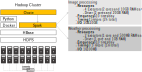

Big Data and Cloud Platforms (Module 2)
Cluster migration - Based on a true story
Matteo Francia
DISI — University of Bologna
m.francia@unibo.it
Migration
Evaluating the costs for a cloud/on-premises data platform
- Fill in this table
- Real-world case study
| Hardware |
? |
? |
| Software |
? |
? |
Case study
Business intelligence group
Migration
Hardware
lshw -short -C cpu
lshw -short -C memory
lshw -short -C disk
- 8 CPUs (144 total)
- Intel(R) Core(TM) i7-8700 CPU @ 3.20GHz
- 32GB RAM (576GB total)
- 2 x 16GB DIMM DDR4 2666 MHz
- 12TB HDD Disk (216TB total)
Software
Migration
| Hardware |
? |
? |
| Software |
? |
? |
On-premises
Hardware cost (up to Mar 05, 2021):
- 1767€ x 18 = 31806€
- Amortization over 3 years (i.e., 10602€/year)
| Hardware |
10602€/year |
? |
| Software |
? |
? |
https://www.rect.coreto-europe.com/en (Accessed 2021-08-01)
On-premises
| Hardware |
10602€/year |
? |
| Software |
? |
? |
On-premises
Software cost (up to 2020): 0€
- Free Cloudera Management System
- No software licensing (for research purposes)
| Hardware |
10602€/year |
? |
| Software |
0€ |
? |
On-premises
Software cost (up to Mar 05, 2021): 10000€/year x 18 = 180000€/year
- Cloudera is no longer free, 10K€ per node
- No license for research purposes
“Houston we’ve had a problem!”
- We cannot update/extend the cluster anymore
- What about migrating to the cloud? (we only consider AWS)
| Hardware |
10602€/year |
? |
| Software |
180000€/year |
? |
Migration
Moving a Hadoop cluster to the cloud (we only consider AWS)
How do we start?
- We have already defined the hardware and the software stack
- Start with coarse tuning, identify the dominating costs first
- Is it computing, storage, or processing?
- Identify a suitable budget, implement, and refine later
- Wrong refinements can do a lot of damage
On cloud v1
Migrating the cluster as-is: ?
- Hint: add 18 EC2 instances satisfying the hardware requirements
| Hardware |
10602€/year |
? |
| Software |
180000€/year |
? |
On cloud v1
\(SOL_{cloud 1}\) migrating the cluster as-is: 13500$/month = 162000$/year
- 18 EC2 instances (t4g.2xlarge) with 12TB EBS storage each machine
Prices change over the year
Still, we have no software configuration
| Hardware |
10602€/year |
162000$/year |
| Software |
180000€/year |
? |
Migration
Pay attention to the region
- Different regions, different prices
- Different regions, different services
- Remember the GDPR and data locality
Migration
It makes no sense to move the cluster as-is
- More machines ensure better (on-prem) scalability but higher costs
How do we proceed with the migration?
- We need minimum software requirements
- Try to achieve the smallest migration impact
- Find the most similar cloud-based solution to a Hadoop cluster
- Rethink applications (later) when you got the know-how
- Identify a suitable budget and refine it later
- Wrong refinements can do a lot of damage
Migration
HDFS
- How much durability do we need?
- HP0: three replicas (we stick to this)
- HP1: decrease replicas for cold data
- HP2: move cold data to the glacier or delete id
- …
HBase has marginal effects on the pricing (100GB << 50TB)
- For simplicity, we can omit it
Overall: 50TB storage/year
Migration
Processing takes place each time that ESA provides a satellite image
- Some days no images are available
- Some days up to 10 images are available
- Spark jobs are always executed with the same parameters
Image processing
- 4 machines, 2 cores, 10GB RAM at least
Weather processing is negligible
On cloud v2
\(SOL_{cloud 2}\): compare 4 machines on-premises vs on cloud
- Assuming 1 Executor = 1 Machine
On-premises
- 4 machines: 10602€/year / 18 machines x 4 machines = 2356€/year
- Cloudera requires at least 10 nodes: 100000€/year
AWS
- 4 EC2 instances: 162000$/year / 18 machines x 4 machines = 36000$/year
- Problems
- Machines are up and running even when no computation is necessary
- This is necessary to persist data
- Still, no software stack
| Hardware |
2356€/year |
36000$/year |
| Software |
100000€/year |
? |
Migration
HDFS on EC2
- Heavy price
- Machine must always be on to guarantee data persistence
- Data locality
S3
- Much cheaper
- Does not require machines for data storage
- Data locality is lost
Migration
Migrating cluster to EMR: ?
Given the software requirements, we need
- 1 x Master node (to manage the cluster)
- 1 x Core node (with HDFS/EBS)
- 4 x Task nodes (to compute)

| Hardware |
2356€/year |
? |
| Software |
100000€/year |
? |
On cloud v3
Migrating cluster to EMR: 14710€/year
- S3 Infrequent Access storage (50 TB per month): 640€
- 1 x Master EMR nodes, EC2 (m4.xlarge), Utilization (75 h/month): 4.5€
- 75 h/month = 15min/task x 10task/day x 30day/month / 60min/hour
- 1 x Core EMR nodes, EC2 (m4.xlarge), Utilization (75 h/month): 4.5€
- 4 x Task EMR nodes, EC2 (m4.4xlarge), Utilization (75 h/month): 72€
- 4 x EC2 on demand (task node): 174.83€
- Storage amount (30 GB)
- Workload (Daily, Duration of peak: 0 Hr 15 Min)
- Instance type (m4.xlarge)
- 2 x EC2 on demand (master and core nodes): 330€
- Storage amount (30 GB)
- Instance type (m4.xlarge)
| Hardware |
2356€/year |
14710€/year |
| Software |
100000€/year |
? |
On cloud v4
Migrating cluster to EMR: 13445€/year
- S3 Infrequent Access storage (50 TB per month): 640€
- 1 x Master EMR nodes, EC2 (m4.xlarge), Utilization (75 h/month): 4.5€
- 75 h/month = 15min/task x 10task/day x 30day/month / 60min/hour
- 1 x Core EMR nodes, EC2 (m4.xlarge), Utilization (75 h/month): 4.5€
- 4 x Task EMR nodes, EC2 (m4.4xlarge), Utilization (75 h/month): 72€
- 4 x EC2 spot (task node): 69.55€
- Storage amount (30 GB)
- Workload (Daily, Duration of peak: 0 Hr 15 Min)
- Instance type (m4.xlarge)
- 2 x EC2 on demand (master and core nodes): 330€
- Storage amount (30 GB)
- Instance type (m4.xlarge)
| Hardware |
2356€/year |
13445€/year |
| Software |
100000€/year |
? |
Summing up
| Constant |
EC2 |
Manual |
YES: but high storage cost |
~36K€ |
| Constant |
EC2 |
EMR |
YES: but high storage cost |
~37K€ |
| Constant |
S3 |
Manual |
YES: but still manual provisioning |
~17K€ |
| Constant |
S3 |
EMR |
YES |
~18K€ |
| Pay-per-use |
EC2 |
Manual |
NO: pay-per-use + EC2 = Data unpersisted |
- |
| Pay-per-use |
EC2 |
EMR |
NO: pay-per-use + EC2 = Data unpersisted |
- |
| Pay-per-use |
S3 |
Manual |
ISH: repetitive manual provisioning |
- |
| Pay-per-use |
S3 |
EMR |
YES |
~14K€ |
Summing up
We estimated the cluster costs
- On-premises solution with 18 machines: no-go
- Cloud solution with 18 EC2 instances: no go
We reduced the solution based on software requirements
- On-premises solution with 4 machines: no-go
- Cloud solution with 4 EC2 instances: no go, we miss the software configuration
- We moved the cluster to AWS EMR + spot instances + S3 storage
Can we do better?
- Pick ad-hoc cloud services (AWS Lambda e AWS Batch)
- … to re-think the applications (food for thoughts)